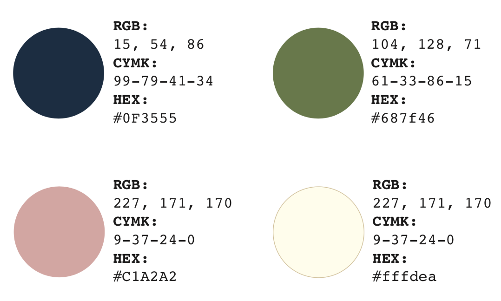
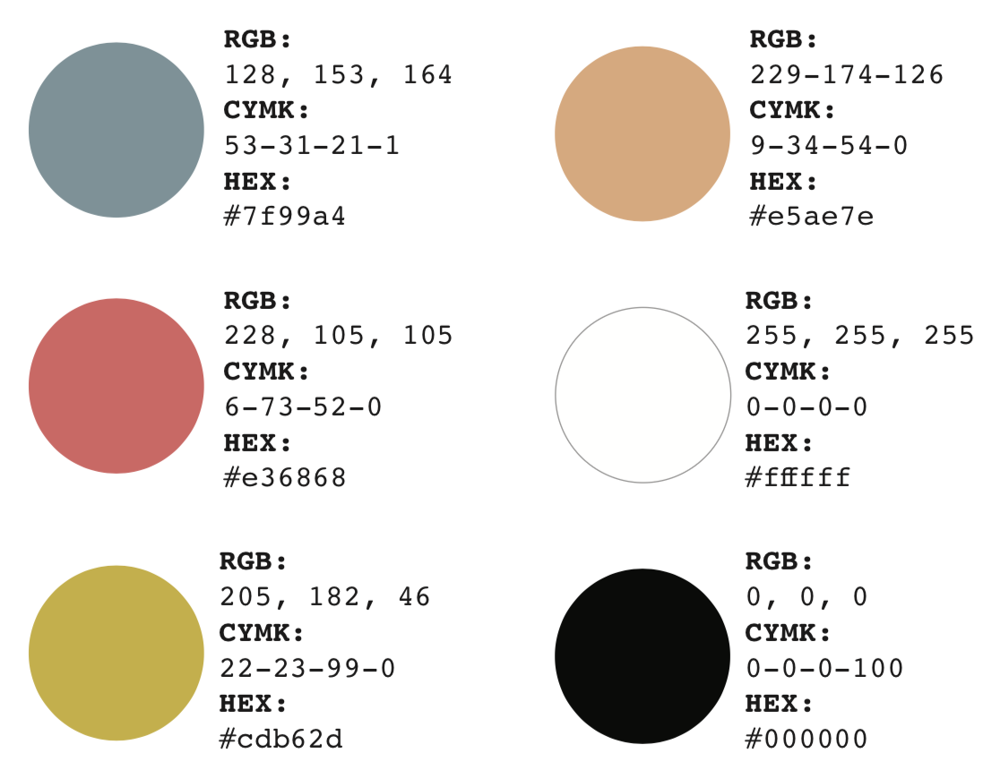

The primary palette is used for main colour stories within the website such as text, backgrounds, hyperlinks, and all illustrations should use some of these colours.
The secondary palette are accent colours that can be used for impact in illustrations only.
